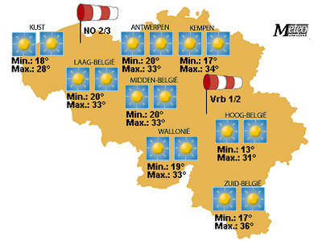
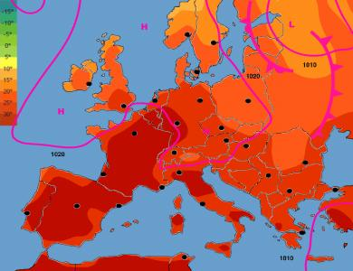

Het is warm
zondag 10 augustus 2003 | Natuur
Knipsels uit De Standaard ©
“Mogelijk sneuvelen er morgen records en wordt in het zuiden van het land, aan de grens met Frankrijk en Luxemburg, de recordtemperatuur van 39 à 40 graden Celsius bereikt. In de rest van het land is het morgen volgens het KMI ‘aangenaam’’, met temperaturen van 30 à 35 graden. Aan de kust haalt het kwik ‘slechts’ 23 graden.”
“De hittegolf die Europa lamlegt, kan volgens weerkundigen nog tot en met september aanhouden. Volgens het Italiaanse staatsonderzoekscentrum CNR heeft dat voor een deel te maken met een extreem krachtig regenseizoen in zuidelijk Afrika, waardoor in Europa lucht wordt aangevoerd uit het hete Noord-Afrika in plaats van de Atlantische Oceaan. Het Europese dodental van de extreme hitte liep vandaag op tot 38.”
Het weze een troost dat deze verschroeiende zomer geen unieke gebeurtenis is, getuige de geschiedenisboeken uit een niet-zo-ver verleden. De zomer in 1540, middenin de zogenaamde Kleine IJstijd, kon er ook wat van…
“Maandenlang heerst in West-Europa een klimaat dat thuishoort in het gebied van de Middellandse Zee met alle gevolgen vandien: koeien sterven van de dorst, zonnesteken zijn aan de orde van de dag, de Rijn staat beneden Keulen zo goed als droog en in Parijs wandelt men droogvoets door de Seine. De wijn- en graanoogsten zijn vroeger dan ooit, branden zijn nauwelijks te blussen en drinkwater is een groot probleem. Keizer Karel V wil in die zomer met zijn gevolg naar Amsterdam, maar krijgt zijn mensen niet mee: het Amsterdams drinkwater is te gevaarlijk! Tot ver in de herfst van 1540 houdt het zonnige , warme weer aan. Nog tientallen jaren zal er worden gesproken over het “grote zonnejaar”. Sommigen vergelijken 1540 met 1473, toen de wijn ook uitzonderlijk vroeg was en van superieure kwaliteit, maar velen houden het erop dat men de wonderlijkste zomer heeft beleefd sinds het jaar 1000! Op veel plaatsen begint de bevolking wijn aan te planten waarvoor heel wat akkers worden verwoest en omgezet in wijngaarden. Helaas haalt het allemaal niets uit: 1540 vormt de apotheose van een serie bijzonder warme zomers en daarna verslechteren de zomers.”—KNMI Nederland
Je vraagt je af hoe de krant er toen uitzag…


Mark op 6 maart 2005
Deze zomer vergeet ik nooit meer